Pick the look. Then let the agent code.
Describe your product, choose the styles you want to see among sixteen, and minutes later compare real HTML screens of it side by side. Rework, pick one, and hand your coding agent a pack of files to build from.
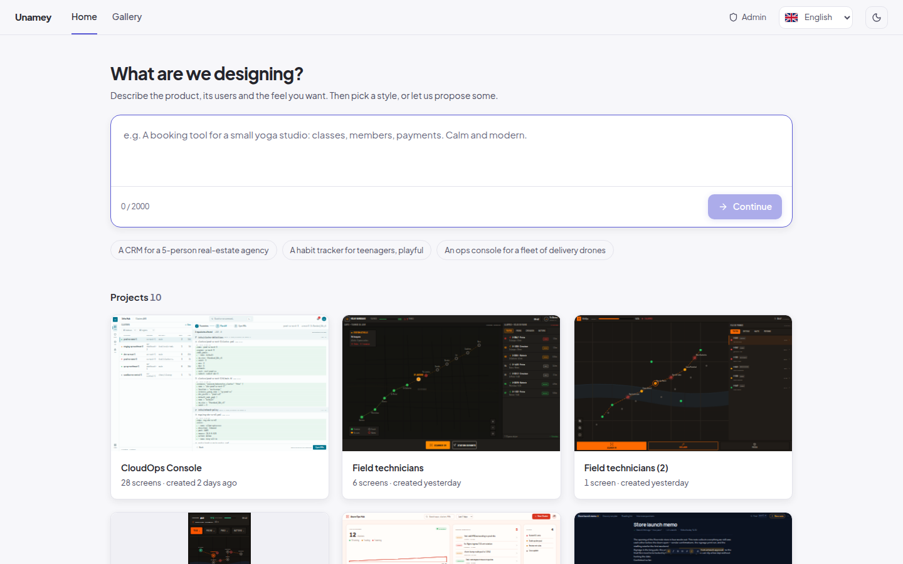
With an agent, you discover the design at the end. Here, you choose it at the start.
Ask a coding agent for a screen and you get one answer, after the code is written. Every change is another prompt, another round. Unamey turns that around: sixteen styles to pick from, real HTML previews from the first minute, several looks of your product side by side. You compare, you rework, you decide. The agent starts once the look is settled.
What you get
- Styles chosen up frontSixteen styles with previews. Pick the ones you want to see before anything is generated: a Swiss grid, a bento board, a dense console of the same product.
- Previews from the first minuteEvery screen is a real HTML page you can open, zoom and compare. No waiting for the build to see what you will get.
- Rework without touching codeColours, fonts, radius, density, layout. Bolder, quieter, another style. Each try is a new screen next to the previous ones.
- One look across the whole appEvery further page, desktop and mobile, is generated on the chosen shell and tokens. The consistency agents lose, kept.
- Runs on your machineA local 27B model is enough. An API provider only makes it faster.
Fair warning: a strong agent such as Claude Code with Opus already draws a clean one-shot screen, and our pack did not make that single screen better (comparison report). The gain is the choice and the consistency, not a prettier single screen. Whether that saves correction rounds on a real multi-screen project is the measurement in progress.
From a brief to a pack, in six steps.
Brief
Type a description and pick the styles you want to see, one or several of the sixteen, or let the planner propose them. One model call expands your words into a brief (users, data objects, main task, density, suggested pages) that you review. Your own words stay binding: the expansion cannot narrow the scope, rename the product or drop a colour you asked for.
Plan
For each variant, a planner picks one of 16 named structures (master list and detail, board, timeline, dashboard, step flow, live console, record page, catalog) and one of 16 styles, different across variants. Every object the brief names gets a visible region.
Draw
The model writes a standalone HTML page (Tailwind CDN, inline SVG icons) that follows the direction and a layout vocabulary. You get several looks of the same product to explore, then set one as the project's look. The right column adjusts the tokens live.
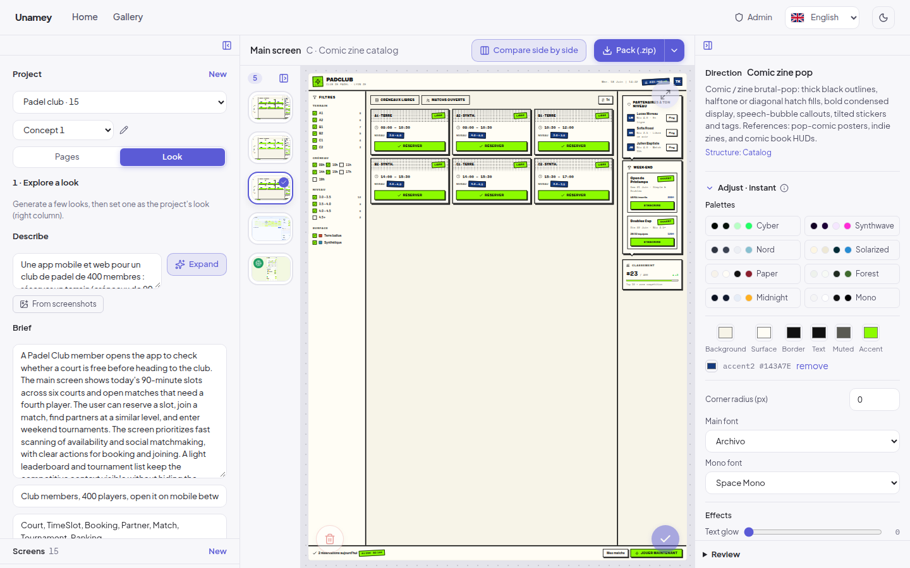
Three looks of a padel club app. Rework
Give a verdict (good, mixed, bad), refine along one action (bolder, quieter, distill, typeset, colorize, layout), add a variant in another style, edit tokens or give a layout-only instruction. Every result is a new screen next to the previous ones, and you can compare two at the same zoom.
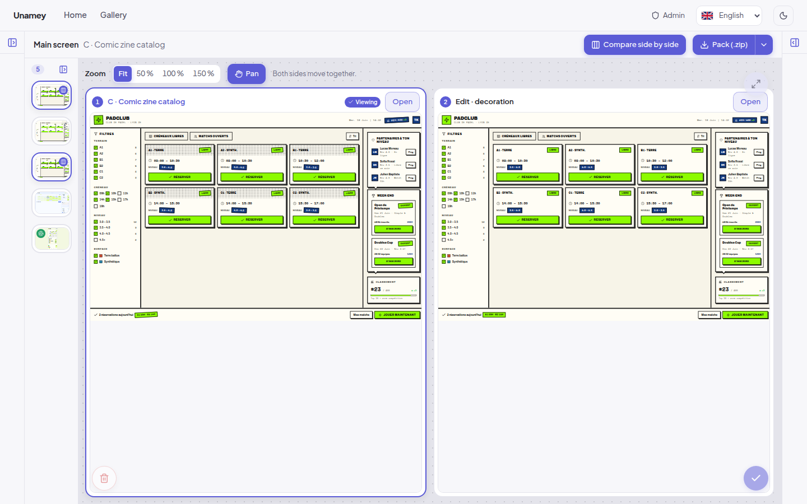
Compare two screens, panning both at once. Pages
Set a screen as the project's look, then type page names. Each page is generated on that look, as desktop, mobile or both. Mobile pages are their own screens: 390 px, a bottom tab bar, 44 px targets.
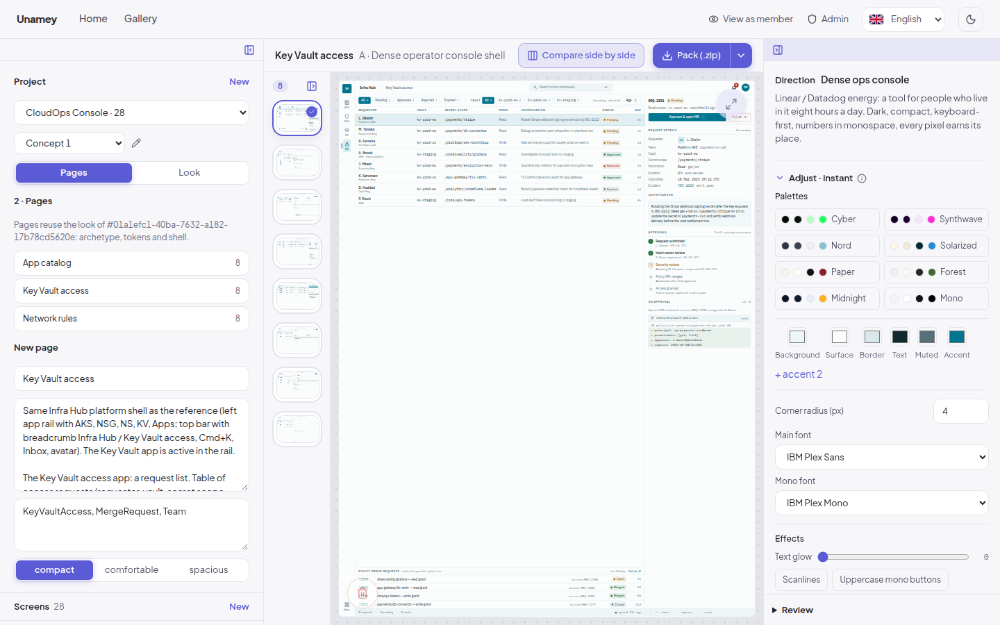
Pages of a project on one look. 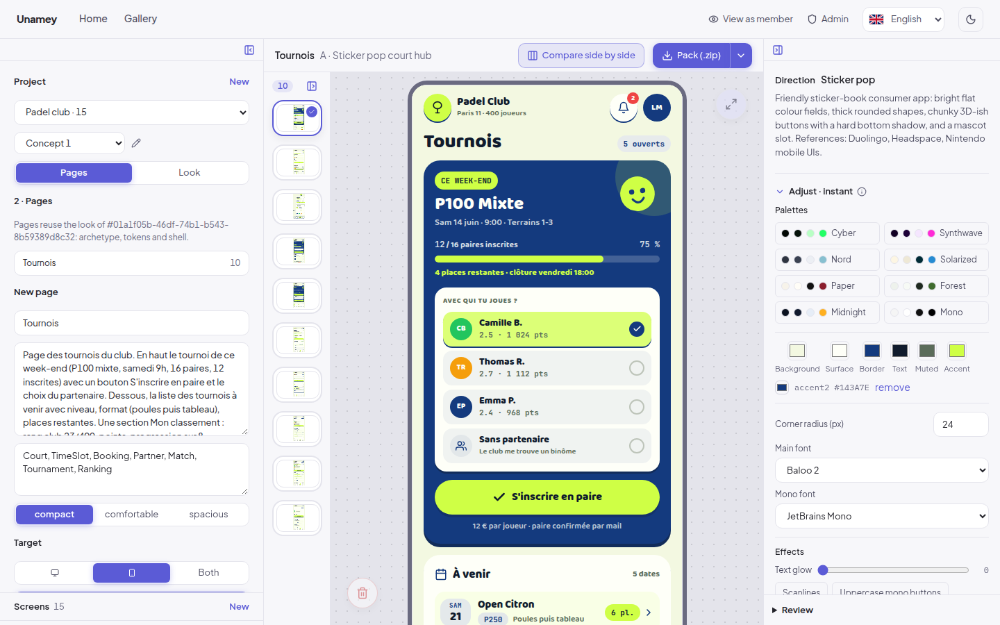
A mobile page in a phone frame. Pack
Export the project pack and copy it into the app you are building. The gallery keeps every screen, grouped by project and filterable by verdict, style or text. Read-only share links let someone see a screen without an account.
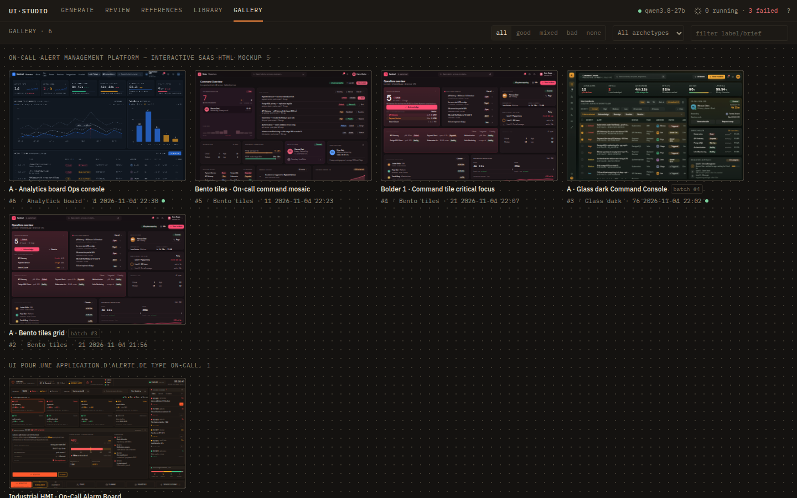
The gallery keeps every screen.
Sixteen styles, each with its own rules.
Every style comes with a layout, neutrals, hues, fonts and do and don't rules. Pick one yourself, or let the planner propose three.
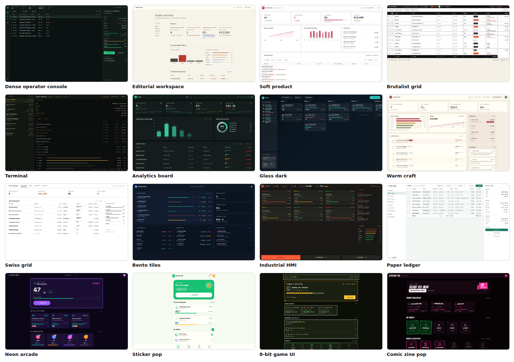
Generated pages, as they come out.
Local model, one shot, no retouch.
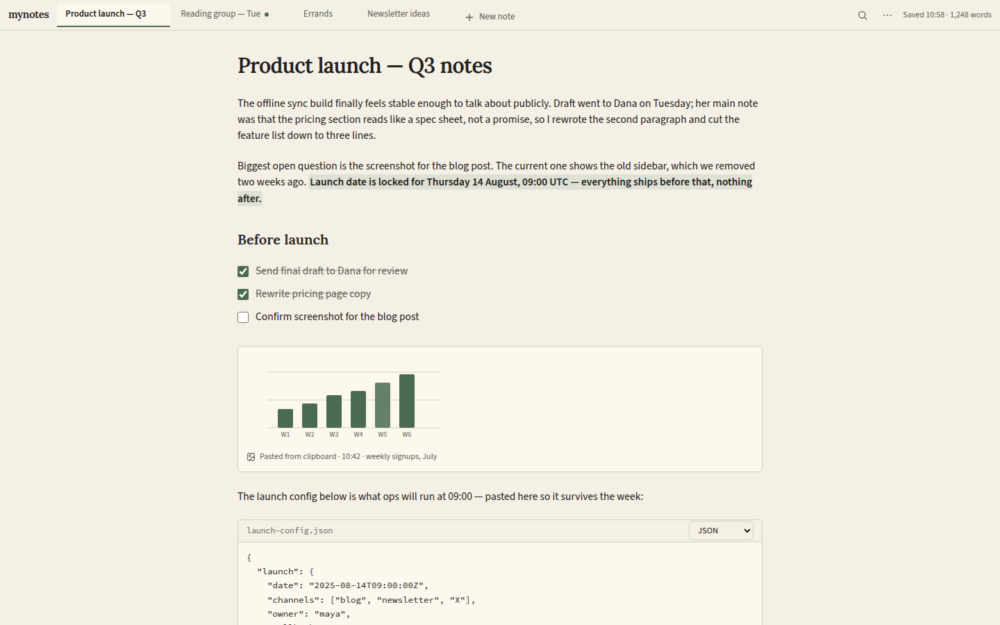
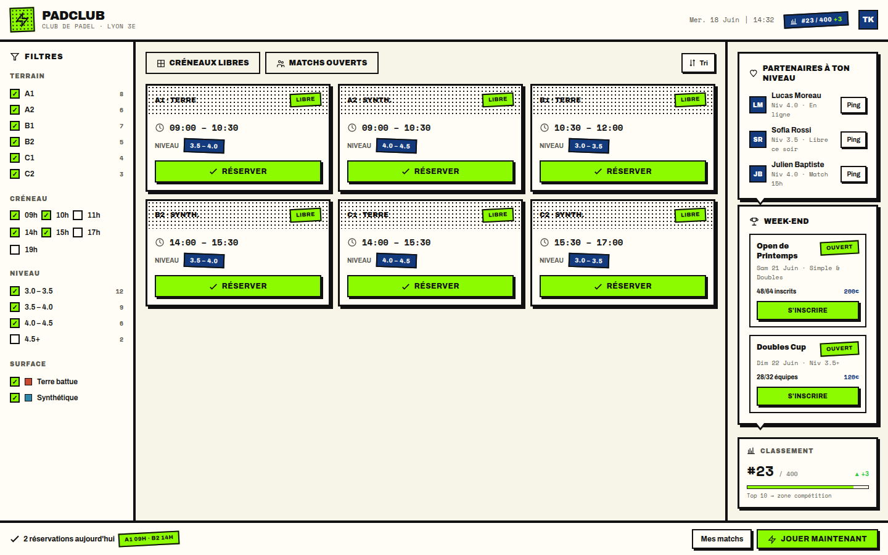
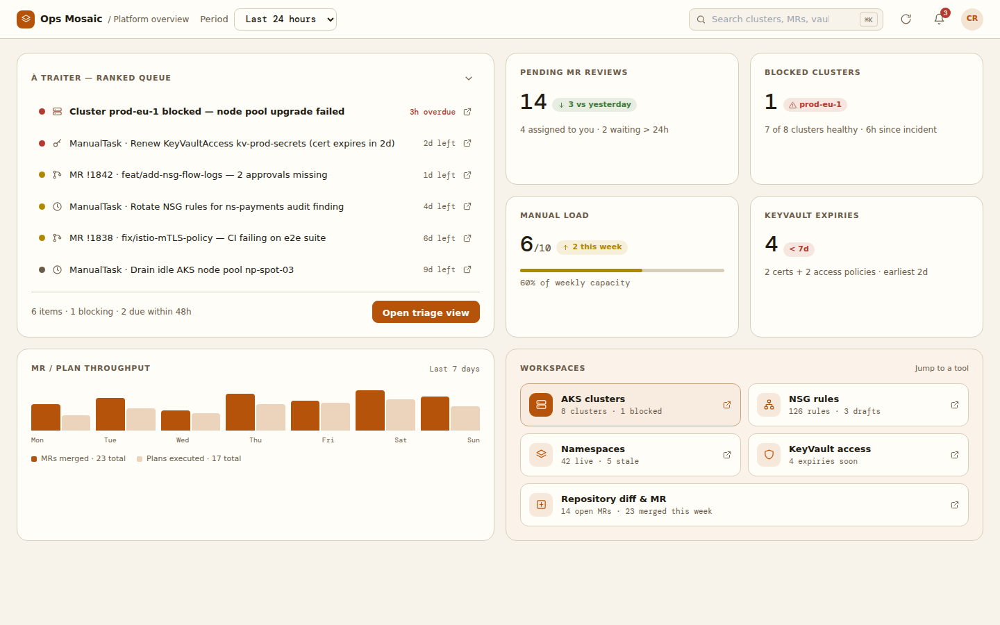
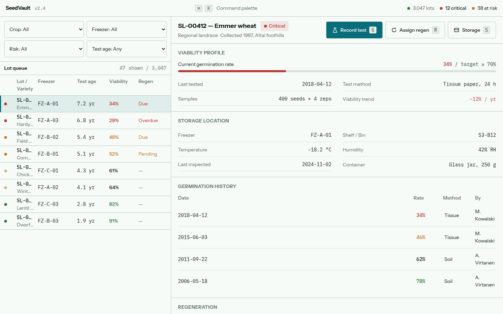
The result depends on your brief and on your models.
Unamey is a pipeline, not a magic model. Two things set the quality of what comes out.
- The descriptionA brief that names the users, the objects on screen and the main task gets a screen that fits that task. Two vague sentences get a generic one. The expansion step fills in structure, but your words stay the source: it cannot invent what you did not say.
- The modelsThe drawing model writes the pages, an optional cheaper planner writes the briefs and directions, and fallbacks take over when a model errors. The same brief gave a truncated master-detail on a local 27B model and a complete dashboard on a hosted model. A local model works. A stronger one draws more complete pages. Tried so far: a local Qwen3.8 27B, and DeepSeek V4.1 Flash, Qwen3.7 Flash and GLM 5.3 Flash through hosted endpoints.
The pack is the decision, as files.
Each project exports one folder the agent can read.
packs/<project>/
├── SKILL.md product, chosen style and structure, shell, tokens, do/don't, pages
├── tokens.css design tokens as CSS variables, plus success, warning, danger
├── reference.html the look's page, the one to imitate
└── pages/
├── <page>.html one standalone page per screen
└── <page>.mobile.html its mobile version
Copy the pack to <app>/.claude/skills/ui-pack/ and ask your coding agent to build the screens following that skill. It gets the style, the tokens and the pages to copy.
Run it yourself.
- Rust stable, Node 20+ and
just. - Docker, for the dev PostgreSQL.
- An OpenAI-compatible endpoint that accepts tool calls. It works on a local 27B model.
git clone https://github.com/ikarys/Unamey
cd Unamey
just setup
just devThen open http://localhost:5180. Set a provider in Settings first. The README has the full variable table.